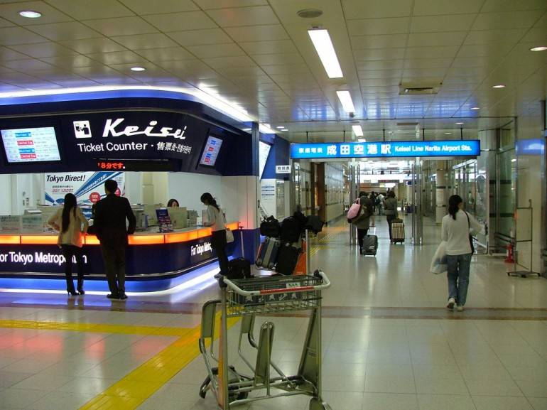
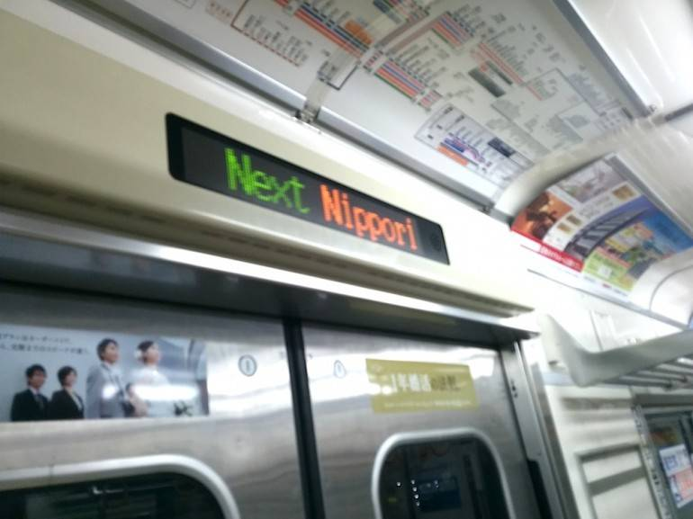
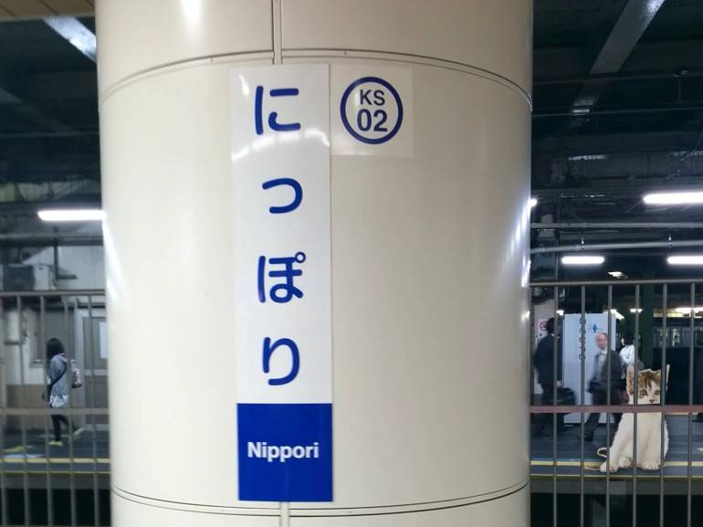
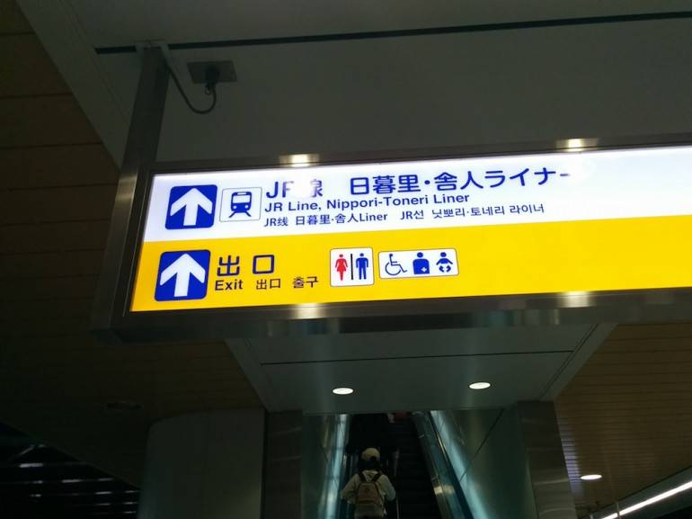
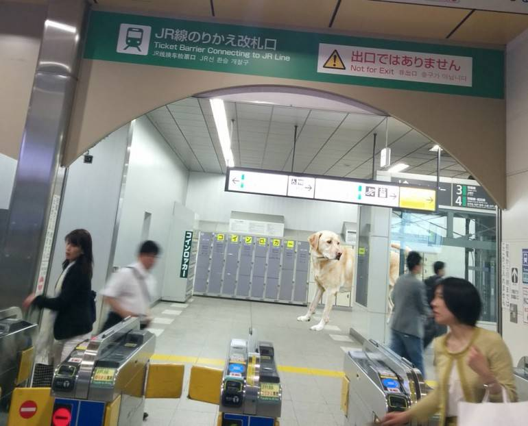
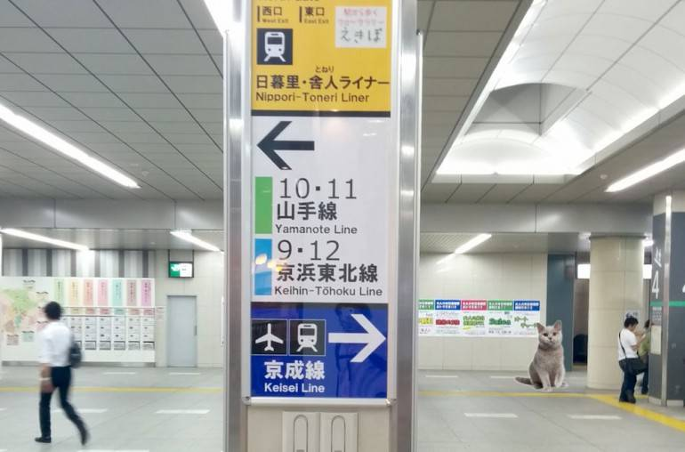
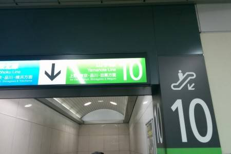
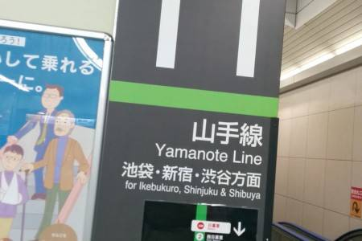
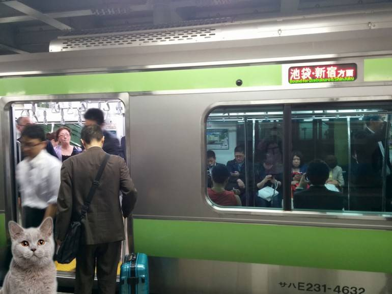

Once you arrive at Narita, follow the signs for “Railways” taking the escalator down to the lower level. Once there, look for the nice blue Keisei Line:

Ask for a ticket to your destination but not on the Skyliner, or if you’re planning on having a few days in Tokyo, ask for a Pasmo card—this is a top-up card usable on all trains, buses, etc. in the Tokyo area. You can also get a Suica card, from the JR station ticket office opposite—it doesn’t matter which one you buy, they both work on all trains and cost the same (500 yen for the card + the amount you wish to charge it with).
Next go through the (two) ticket barriers and down the stairs to the Keisei platform. N.B. NOT the Skyliner platform.
For transfers on to the JR Yamanote Line, get off at Nippori. Look out for the notice on the train:

This is what the Nippori Station Platform looks like:

Head up the escalator, following the JR signs:

Go through the JR transfer gate—it’s marked as “This is not an exit”:

Head to the JR Yamanote line – platforms 10 (to tokyo) and 11 (to Shinjuku/Shibuya)

Platform 10 for Tokyo:

Platform 11 for Ikebukuro, Shinjuku, Shibuya:

And get on the train! (Every train leaving from the platform is going in the same direction.)
